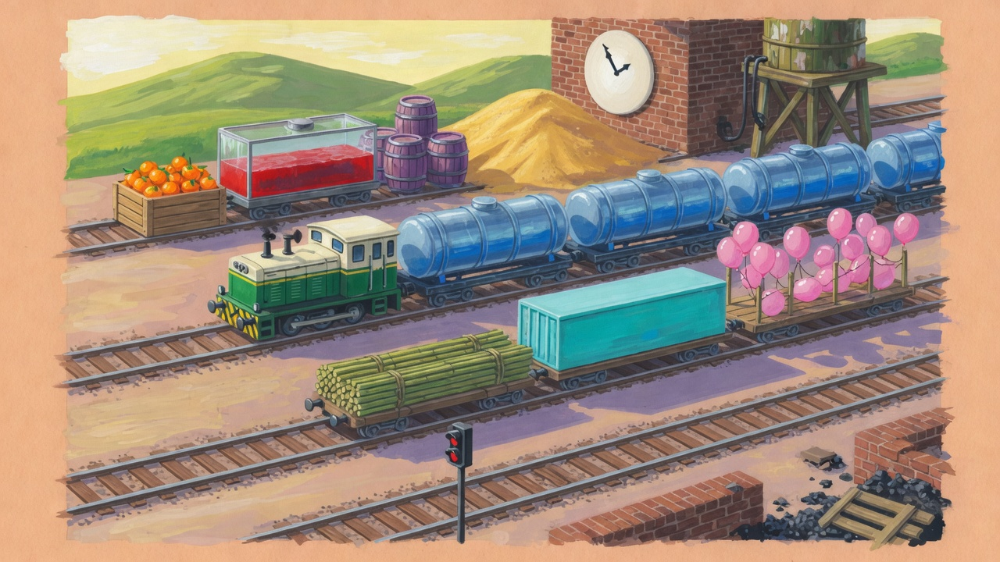
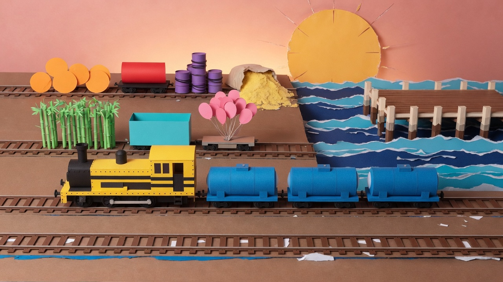
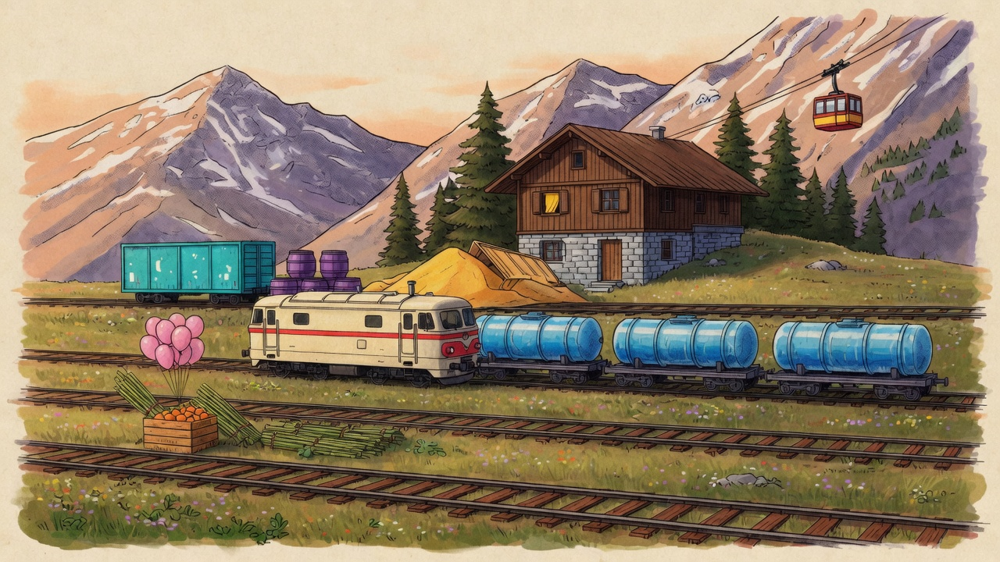
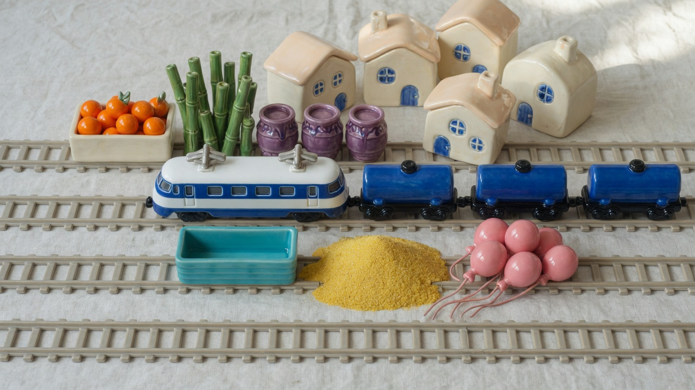
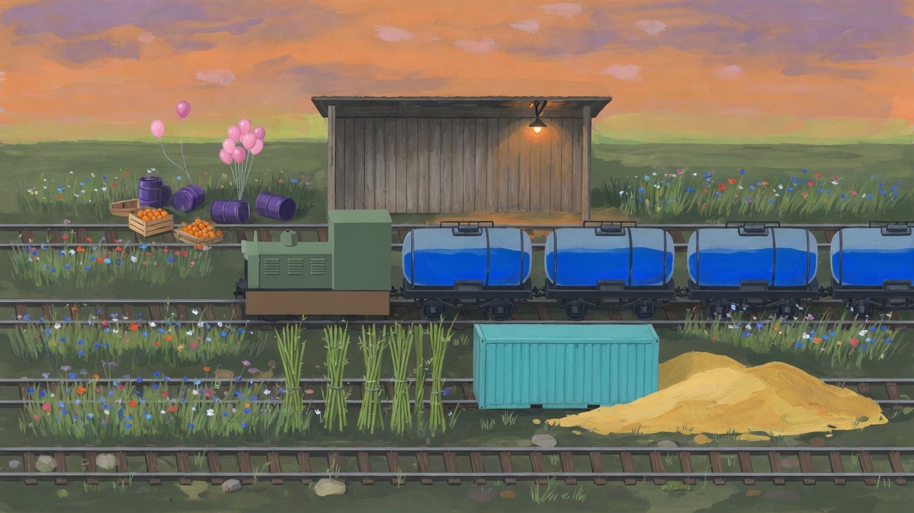

1. Oficina
Manhã de guache. Diesel curto, verde e creme, no trem de tanques de vidro. Em volta: laranjas, tanque vermelho, barris, areia, bambu, contêiner e balões. Galpão de tijolo, relógio e caixa d'água.

2. Cais
Papel recortado, fotografado. Locomotiva de doca, amarela e preta, com tanques azuis. Laranjas, tanque vermelho, barris, areia, bambu, caixa turquesa e balões, sobre o píer e o mar.

3. Serra
Nanquim e guache. Locomotiva creme de uma faixa vermelha, no trem azul. Contêiner, barris, areia, laranjas, bambu e balões, com chalé, pinheiros e teleférico.

4. Esmalte
Cerâmica vidrada, em foto de estúdio. Locomotiva elétrica branca e tanques de cobalto. Laranjas, bambu, barris, contêiner, areia e balões, diante de um vilarejo de casinhas.

5. Plantado
Guache de fim de tarde. Locomotiva baixa, verde, no trem de quatro tanques de vidro. Balões, barris, laranjas, bambu, contêiner e areia entre os canteiros, com um abrigo de madeira.